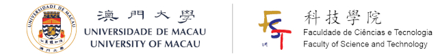

HU Guanghui, 胡光辉 curriculum vitae
Associate Professor at Department of Mathematics
Faculty of Science and Technology, University of Macau
Office No.: +853 88228544, Fax: +853 88222426
Mail: E11-3070, University of Macau, Avenida da Universidade, Taipa, Macao SAR, China.
Email: garyhu at um.edu.mo
Official Webpage: https://www.fst.um.edu.mo/people/garyhu
Education
- Ph.D, Department of Mathematics, Hong Kong Baptist University, 2010
- M.Sc, College of Mathematics, Sichuan University, 2006
- B.Sc, College of Mathematics, Sichuan University, 2003
Work Experience
- Associate Professor, Department of Mathematics, University of Macau, August 2018 - present
- Assistant Professor, Department of Mathematics, University of Macau, August 2012 - August 2018
- Postdoc, Department of Mathematics, Michigan State University, January 2010 - August 2012
Teaching
- Now: MATH2004 Mathematical Analysis II, Spring semester 2022.
- Taught: Mathematical Analysis I&II • Partial Differential Equations • Numerical Methods for Differential Equations • Numerical Analysis • Advanced Mathematics • Advanced Engineering Mathematics • Calculus(at Michigan State University)
Research Interests, Publication list
- I am interested in numerical methods for partial differential equations, including the design and analysis of numerical methods, efficient implementation of algorithms, as well as applications of methods in computational physics such as computational fluid dynamics, electronic structure calculations, computational micromagnetics. Furthermore, I am also interested in developing numerical software, for both scientific research and engineering applications.
Professional Service
- 《数值计算与计算机应用》青年评述栏目特邀编辑 (2021-至今) • Associate Editor of Communication in Computational Physics (2020-present) • Associate Editor of Advances in Applied Mathematics and Mechanics (2018-present)
- Member of Executive Committee of East Asia Section of Society for Industrial and Applied Mathematics (EASIAM) • 中国工业与应用数学学会(CSIAM)高性能计算与数学软件专业委员会委员 • Member of Macau Mathematical Society • Member of Computational Pharmacy Society
Awards
- FST Teaching Excellence Award of Faculty of Science and Technology at University of Macau, 2022
- FST Teaching Excellence Award of Faculty of Science and Technology at University of Macau, 2018
- The Best Thesis Award of Hong Kong Mathematical Society, 2010
- The First Prize Winner of the Third Student Paper Competition for Young Computational Mathematicians, China Society for Computational Mathematics, 2007
Powered by Github